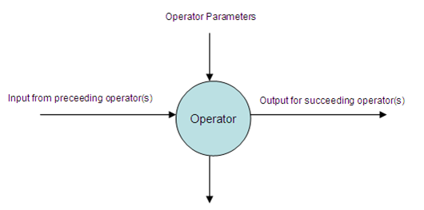

The Alpine predictive analytics platform leverages the powerful parallel-processing technology of MPP databases and Hadoop to accomplish fast data-mining of massive data volumes on a cost-effective hardware platform. Alpine is built to operate within Hadoop environments and also the Greenplum, Oracle, Postgres, DB2, and Netezza database engines, ensuring that the data can be analyzed where it resides.
Alpine is a web-based application that enables users to build up sophisticated Analytics Workflows out of a sequence simple analytics functions (Operators) and apply them to data from a variety of Data Sources. Users create these flows in a drag-and-drop Workflow Editor, and then collaborate with other users by publishing, sharing and viewing their workflows in public groups.
The Operator is the basic unit of the Data Mining Analytic Flow. Operators are grouped into the following categories
Category |
Operator |
Data Extraction |
Dataset |
Hadoop File |
|
Copy To Database |
|
Copy To Hadoop |
|
Exploration |
Bar Chart Preview |
Correlation Analysis |
|
Frequency Analysis |
|
Histogram Analysis |
|
Univariate Analysis |
|
Summary Statistics |
|
Information Value Analysis |
|
Variable Selection |
|
Scatter Plot Matrix |
|
Transformation |
Table Set |
Aggregate |
|
Normalization |
|
Null Value Replacement |
|
Numeric To Text |
|
Pivot |
|
Row Filter |
|
Column Filter |
|
Table Join |
|
Variable |
|
Weight Of Evidence |
|
WOE Table Generator |
|
Sampling |
Random Sampling |
Stratified Sampling |
|
Sample Selector |
|
Model |
AdaBoost |
Association |
|
Cart Tree |
|
Decision Tree |
|
K-Means |
|
Linear Regression |
|
Logistic Regression |
|
Model |
|
Naive Bayes |
|
Neural Network |
|
Principal Component Analysis |
|
PLDA Trainer |
|
SVM Classification |
|
SVM Novelty Detection |
|
SVM Regression |
|
SVD |
|
Time Series |
|
Scoring |
AdaBoost Prediction |
Linear Regression Prediction |
|
Logistic Regression Prediction |
|
Naive Bayes Prediction |
|
Neural Network Prediction |
|
PLDA Prediction |
|
SVM Prediction |
|
Time Series Prediction |
|
Tree Prediction |
|
SVD Calculator |
|
Goodness Of Fit |
|
LIFT |
|
ROC |
|
Others |
SQL-Execute |
Sub Flow |
|
Note |
The data mining process in Alpine is a flow of operators. Each operator takes input from the preceding operator(s), performs its task and produces output for the succeeding operators. Operators may have parameters which can be configured by the user and which may produce visual output within the user interface. Validation is performed when creating connections between operators and in configuring their parameters. Then, at run-time, information produced from an operator is passed to its succeeding operator(s). This forms an information flow through the operators during the flow execution which can be inspected and analyzed at any intermediate point.

Input and output of an operator
The Analytic Flow Engine will check if the required inputs can be obtained from the preceding operator(s). It will also determine the path of the operator flow, and any dependencies between operators will also be considered.
The Analytic Flow Engine also checks if all required parameters are present. If all required parameters are not present, the flow will not start and errors will be reported to the user.
When an operator has finished its task, the analytic engine will get the operator’s output, if there is any, and display it as a tab in the Workflow Result screen.
Data Source connection information is required for accessing the data in a database or Hadoop. In order to establish the required Data Source connections, which can be easily shared by different Operators in an Analytic Flow, Alpine provides a configuration dialog for managing the Data Source connection information. Details on creating and maintaining Data Sources will be discussed in the 'Data Sources' section.
Once Data Sources have been configured, the user is able to browse for tables and files of data in the Data Source Explorer, and then drag them into the Workflow Editor as the basis for analysis and modeling. Users may also upload additional data to the Data Sources for inclusion in their workflows.
Analytic Flows are created and edited in the workflow editor. Users browse for data in the Data Source Explorer, add them to the workflow, and then begin applying operators in order to prepare the data, perform analyses, build models and produce model scores. Operators are joined together and configured in the editor, and users may save their work over time, with previous versions of the workflows available for reference or to be restored. As flows are built, they can be run in their entirety, or branches of them may be run using the 'step run' feature. Results are then reported back to the user in the Workflow Result window. Previous results are also available for comparison as workflows and data change over time.
Workflows may be shared with other users by saving them to a set of shared groups, and then copying them locally. Flows can also be exported as files that may be imported into another Alpine system. Finally, workflows may also be scheduled to be run regularly, and they can be exported as executable files that can be run independently, for example as part of a batch process.
Details on creating a data mining Analytic Flow will be discussed in the section ‘Editing Workflows’.